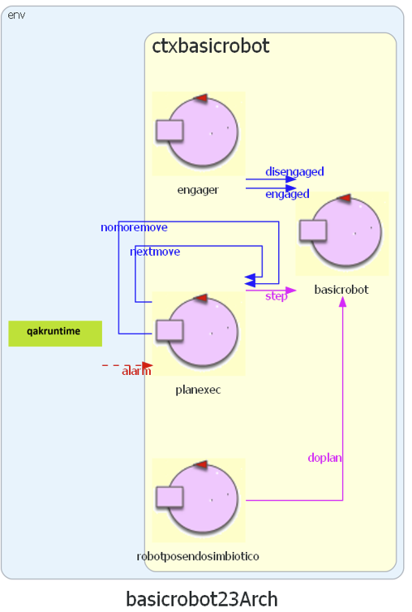

BasicRobot23¶
Obiettivo: introdurre un componente software che esegue comandi di spostamento di un DDR-robot in ‘modo indipendente dalla tecnologia’ con cui è realizzato del robot (virtuale o reale).
requisito tipidirobot¶
Facciamo riferimento ad almeno tre diversi tipi di robot:

Una prima architettura¶
Si delinea una architettura come quella raffiguata:

BasicRobot23: configurazione¶
La utility class unibo.robot.robotSupport.kt si occupa dei dettagli tecnologici specifici di ogni
tipo di robot utilizzando un supporto diverso per ciascun tipo.
BasicRobot23: supporti¶

|
per il VirtualRobot: virtualrobotSupport |

|
per il NanoRobot: nanoSupport, motors |

|
per Mbot: mbotSupport |
File di configurazione¶
Il file di configurazione è impostato su frasi JSon, come ad esempio il seguente
basicrobotConfig.json:
{"type":"virtual","port":"8090","ipvirtualrobot":"..."}
{"type":"realnano","port":"8020","ipvirtualrobot":"dontcare"}
//Arduino connesso al Raspberry:
{"type":"realmbot", "port":"/dev/ttyUSB0", "ipvirtualrobot":"-"}
//Arduino connesso al PC:
{"type":"realmbot","port":"COM6","ipvirtualrobot":"dontcare"}
basicrobot23 model¶

|
Supporti:
|

|
|
Si veda il progetto unibo.basicrobot23, che fornisce il modello eseguibile basicrobot.qak.
Uso del planner¶
Il robot (virtuale o reale) viene considerato un oggetto inscrivibile in un cerchio di diametro D.
Muovere il robot con mossa step(T) con tempo T tale da spostare il robot (con velocità prefissata)
di uno spazio D, permette di costruire una mappa della stanza formata da celle quadrate DxD.
Ad esempio:
0 1 2 3 4 5 6 7 x
0 |r, 1, 1, 1, 1, 1, 1,
1 |1, 1, 1, 1, X, X, 1,
2 |1, 1, 1, 1, X, X, 1,
3 |1, 1, X, 1, 1, 1, 1,
4 |1, 1, 1, 1, 1, 1, 1,
5 |X, X, X, X, X, X, X,
y
0 denota una cella mai percorsa
1 denota una cella libreria
X denota una cella occupata da un ostacolo
r denota la posizione corrente del robot
Un modo per costruire dinamicamente una sequenza di mosse con cui il robot può muoversi dalla posizione
corrente r a un’altra posizione (libera) sulla mappa, consiste
nell’utilizzo di un pianificatore (si veda Planning)
come quello fornito in unibo.planner23-1.0.jar.
Il progetto unibo.planner23, fornisce la classe Planner23Util che realizza le operazioni-base descritte in Planning e varie altre utlità.
Si veda: planexec.
TODO map
map) creare la mappa della stanza vuota
TODO position
position) posizionare il robot al centro della stanza
Realizzare l’esperimento spiralwalker (progetto unibo.usePlanner23Qak).
Creare una mappa della stanza vuota (mapemptyroom23). (progetto unibo.mapperQak23).
Spostare il robot da HOME a una locazione scelta dall’utente ( )
mapemptyroom23 con console start/stop/resume e un Led che si accende quando il robot è stopped.
mapemptyroom23 con Sonar esterno che blocca il robot quando rileva distanza inferiore a un limite dato.
Creare una mappa della stanza con ostacoli interni mapwithobstqak23 nella ipotesi che il bordo superiore sia libero.
basicrobot23 versione Maggio30¶
|  |
|
{kind=link}
Si veda il progetto unibo.basicrobot23, che fornisce il modello eseguibile basicrobot.qak, di cui si fornsice qui una parte:
basicrobot23 messaggi¶
System basicrobot23
Dispatch cmd : cmd(MOVE)
Dispatch end : end(ARG)
Request step : step(TIME)
Reply stepdone : stepdone(V)
Reply stepfailed : stepfailed(DURATION, CAUSE)
Event sonardata : sonar( DISTANCE ) //percepito da sonarobs/engager
Event obstacle : obstacle(X)
Request doplan : doplan( PATH, OWNER, STEPTIME )
Reply doplandone : doplandone( ARG )
Reply doplanfailed : doplanfailed( ARG )
Dispatch setrobotstate: setpos(X,Y,D)
Request engage : engage(OWNER)
Reply engagedone : engagedone(ARG)
Reply engagerefused : engagerefused(ARG)
Dispatch disengage : disengage(ARG)
Dispatch engaged : engaged(ARG)
Dispatch disengaged : disengage(ARG)
Event alarm : alarm(X)
Dispatch nextmove : nextmove(M)
Dispatch nomoremove : nomoremove(M)
//Endosimbiosi di robotpos
Request moverobot : moverobot(TARGETX, TARGETY)
Reply moverobotdone : moverobotok(ARG)
Reply moverobotfailed: moverobotfailed(PLANDONE, PLANTODO)
basicrobot23 attori¶
Context ctxbasicrobot ip [host="localhost" port=8020]
basicrobot23 engager¶
QActor engager context ctxbasicrobot{
//Gestisce i messaggi engage/disengage
...
}
basicrobot23 basicrobot¶
QActor basicrobot context ctxbasicrobot{
/*
Gestisce i messaggi
comando di avvenuto engagement: engaged
comando-base: cmd
passo in avanti: step
*/
State ss0 initial {
...
delegate "engage" to engager
delegate "disengage" to engager
delegate "doplan" to planexec
delegate "setrobotstate" to robotposendosimbiotico
delegate "moverobot" to robotposendosimbiotico
updateResource [# "basicrobot(started)" #]
}
}
basicrobot23 planexec¶
QActor planexec context ctxbasicrobot{
/*
Gestisce i messaggi
esecuzione di un piano: doplan
risposta alla esecuzione di un passo: stepdone/stepfailed
evento di allarme: alarm
Usa i messaggi 'interni':
nomoremove
nextmove
*/
}
basicrobot23 robotposendosimbiotico¶
QActor robotposendosimbiotico context ctxbasicrobot{
/*
Usa il planner e la mappa della stanza
Gestisce i messaggi
posizionamento del robot: setrobotstate
movimento a una cella target: moverobot
risposta alla esecuzione di un piano: doplandone/doplanfailed
*/
}